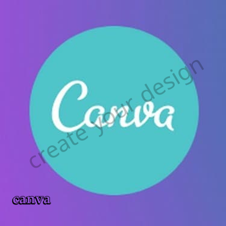
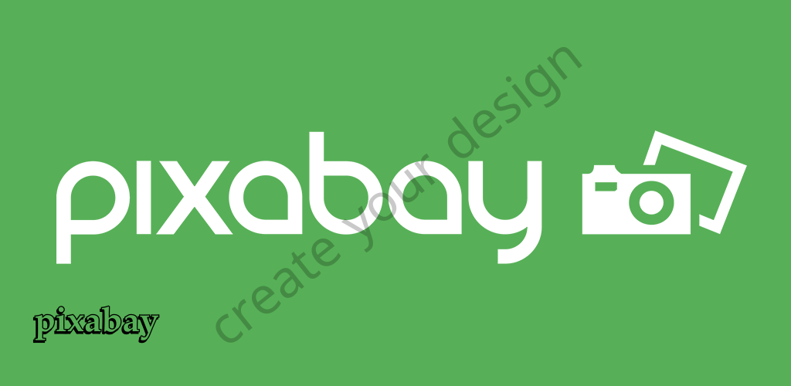
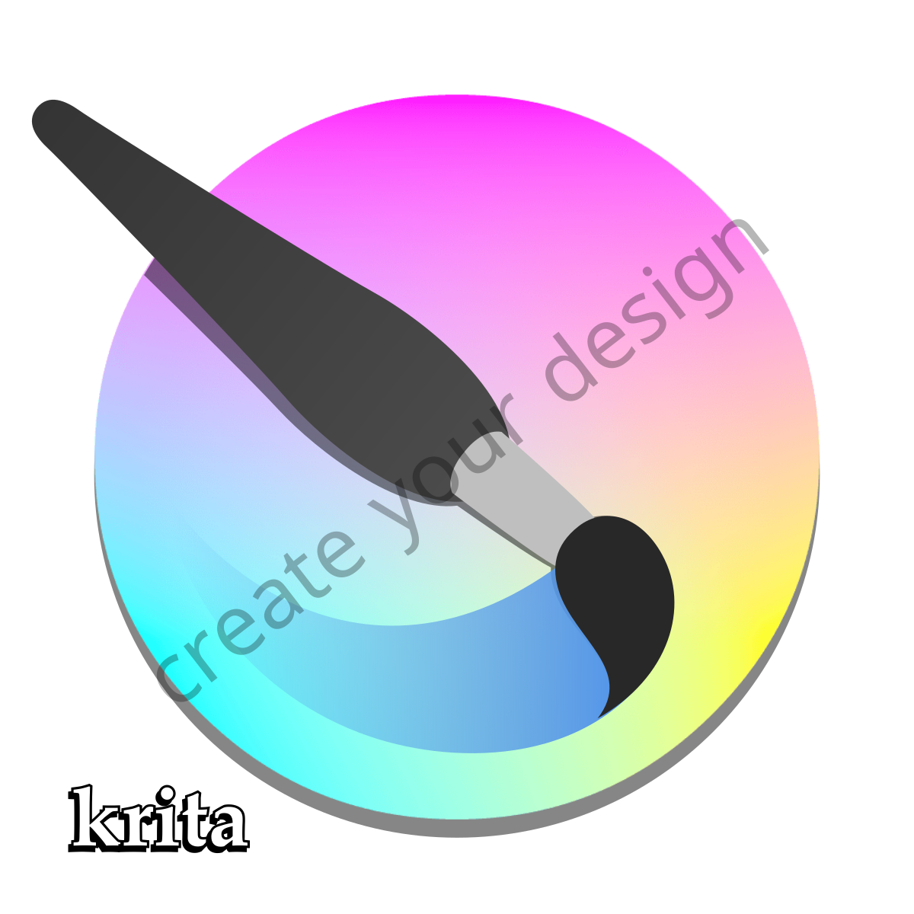

- Pics Art

The PicsArt application is considered one of the best applications for designing and editing images, as it is used by a very large number of people interested in the field of designs, whether on social platforms or various work fields,
due to its many features that provide the user with all the requirements.
The application includes all the professional editing tools that require cutting and writing images, modifying colors, removing impurities, merging images and setting filters, where there are a large number of them, in addition
to the editing tools for adjusting sizes and many other tools.
With all these tools, the user can completely control everything related to the image and output it in the way he wants, especially since it is an easy-to-use application and has a very distinctive and well-arranged main interface,
and the tools for editing are located below each other, each tool can be used By just clicking on it.
The application is available free of charge on the Google Store for the Android phone, and on the Apple Store for the iPhone phone, but it contains some ads that the user must watch in order to enjoy the services and tools
that it provides for free.
The steps to download the program are as easy as the steps to download all the applications that we will talk about in this topic, which is to enter the store and write the name of the application in the search box and enter
the information and download page, then press the install button.
After downloading and installing the program correctly, you can use it with ease, as after opening it you will find the main interface with your plus sign, after clicking on it, you will go directly to the private gallery
in order to choose a specific image and start editing it.
There is also a paid version of the application at a symbolic price that is completely free of any annoying ads, and there are some additions and features that are not found in the free version, but all of them are considered
simple things that can be dispensed with, so the free version is wonderful and completely sufficient.
TO DOWNLOAD
- Canva

The Canva program is considered one of the most important and best applications for designs. There is also the official site for Canva, which can create professional images, design certificates, CVs, and many more.
As for the use of the canva application, it is very simple, as the application only requires the user to create an account on the application, completely free of charge, and after creating the account, he can take advantage
of all the features and create images of all kinds with great professionalism.
The application is available free of charge on the Google Store and the Apple Store, so you can download it simply by following the traditional steps that we mentioned previously. After the successful download and installation,
you must open the program and create a new account if you did not have an account before.
Through these steps, you can create a lot of designs and benefit from them for free, and CV designs are the most used in this program, as many rely on their designs to create them professionally.
There are many other sections on the site and the application, and the most important thing that distinguishes them is the coordination and good organization, where you will find everything you are looking for in the main
interface, so it is an easy-to-use program that does not require any explanations, all you have to do is download and start creating and making images with great professionalism.
This program is characterized by its simple size, despite the fact that it contains thousands of designs that are of high quality. It also received a very special evaluation in the Google Store and was downloaded by millions
of users, and this reflects the extent of its excellence and the free services it provides.
TO DOWNLOAD
- Pixabay

This program is considered one of the wonderful design programs that enables the user to edit and create images professionally no less than the previous two applications, but what increases here in this program is the presence of more
than 700 thousand high-quality images available for use completely free of charge, and therefore many content creators depend of the sites or videos on this program or its own site to obtain these images and use them completely
freely without the existence of any special rights of course and publishing.
The application is also available on the store for free, you can try it and see the modifications and tools that it offers, as well as the high-resolution images that are found in it for free.
TO DOWNLOAD
- Krita

This is the fourth application in our topic, and unlike the previous applications that were specific to the phone, this program is for the computer with the Windows operating system, and also works on the mac operating system, so you
can use it for free to create and modify all images as it contains the editing tools that any designer needs It is one of the best photo editing software for PC.
Using the application is much easier than using Photoshop on the computer, as it has a well-coordinated and wonderful interface and is used by a large number of people who are interested in editing and modifying images.
TO DOWNLOAD
- Pixellab

It is one of the most famous and best photo-editing programs, as a large number of YouTube content creators rely on it to make thumbnails for videos, as it is not only satisfied with having all the tools for editing images professionally,
but it is distinguished by professional and wonderful writing in various fonts, colors and decorations.
Therefore, it is one of the best programs for writing texts on images, and it has been downloaded by millions of users who have had very positive and distinctive comments after using it, and you can view them by entering its
download page in the Play Store.
The application is free despite its features, organization and user's ability to use all photo editing tools.
TO DOWNLOAD
Here we have talked about the top 5 best photo editing and design applications, and we also talked about the advantages of each application and how to download and use it in the right way. There are a very large number of applications
for this wide field, and new applications are constantly released on the Google Store, so you can choose any program that you want to be creative with and create impressive images.